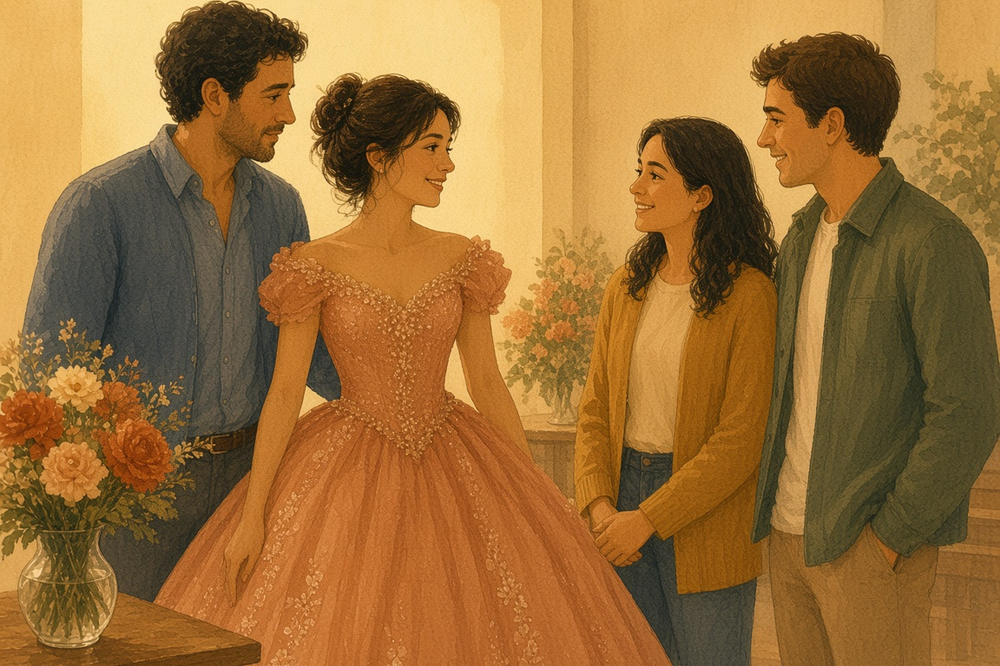

- B1
- Una fiesta de paso
Los quince de Valeria
En Ciudad de México, los quince de Valeria no son un cumpleaños cualquiera: la familia marca un paso de edad.
Texto
El sábado fui a los quince de Valeria, en Ciudad de México. Su madre me invitó con una frase que no olvidé: «No es solo un cumpleaños. Es el día en que la familia dice, en voz alta, que ya no es una niña». Yo no sabía muy bien qué esperar.
En el salón, Valeria apareció con un vestido largo, y la familia la esperaba de pie. Primero bailó un vals con su padre. Algunas amigas y algunos amigos formaban una pequeña corte a su alrededor: no era un espectáculo de televisión, pero sí un momento pensado, con música y fotos. Antes, en algunas familias, hay una misa; en la de Valeria, la celebración empezó en casa de una tía y siguió en el salón. Yo miraba y pensaba: esto no es una fiesta cualquiera.

Después me explicó una prima: no todas las quinceañeras son iguales. Hay familias que alquilan un salón grande y ensayan una coreografía; hay otras que celebran en casa, con menos invitados y un vestido más simple. Lo que se comparte, cuando se puede, es la idea de un rito de paso: la joven ocupa otro lugar frente a los padres, los abuelos y los amigos. Me alegré de que nadie me pidiera un regalo caro. Llevé flores, y Valeria me abrazó como si eso bastara.
En mi país, a los dieciséis años a veces hay una fiesta grande, y a veces no hay nada especial: depende de la familia. Esa noche entendí que los quince no son un manual ni una obligación. Son una manera —muy visible, y a la vez íntima— de decir «ya creciste», delante de la gente que te quiere. Cuando volví al hotel, todavía oía el vals. Y pensé que, si algún día me invitan otra vez, voy a llegar con tiempo, con un detalle simple y con respeto: no voy a tratar esa noche como una simple fiesta de cumpleaños.